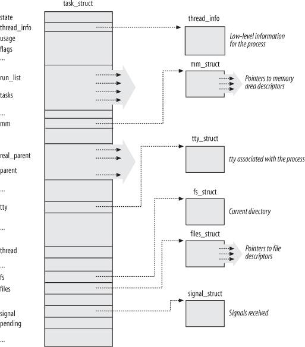
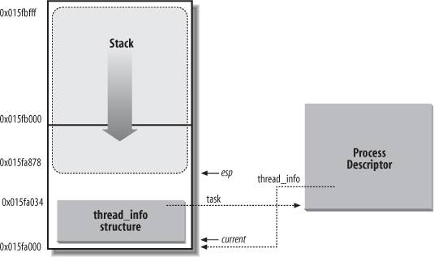
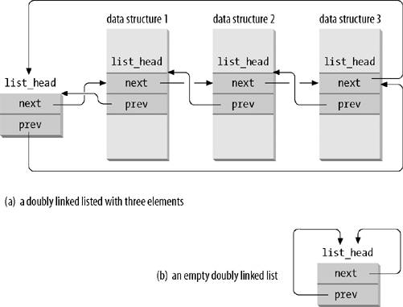
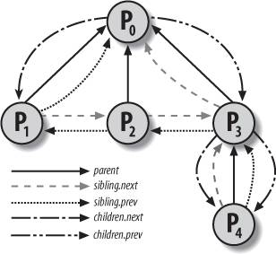
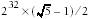
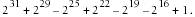
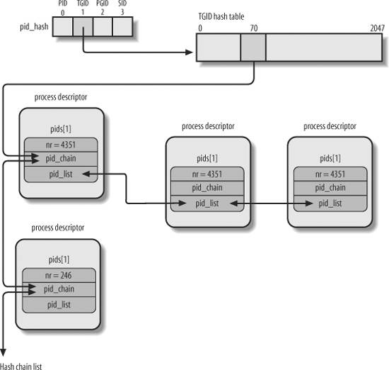

{% include JB/setup %}
{% raw %}
<div>


<a name="understandlk-CHP-3-SECT-2"></a>
<h3 class="docSection1Title">3.2. Process Descriptor</h3><a name="IDX-CHP-3-0649"></a>
<a name="IDX-CHP-3-0650"></a>
<a name="IDX-CHP-3-0651"></a>
<a name="IDX-CHP-3-0652"></a>
<a name="IDX-CHP-3-0653"></a>
<a name="IDX-CHP-3-0654"></a>
<p class="docText1">To manage processes, the kernel must have a clear picture of what each process is doing. It must know, for instance, the process's priority, whether it is running on a CPU or blocked on an event, what address space has been assigned to it, which files it is allowed to address, and so on. This is the role of the <span class="docEmphasis">process descriptor</span>  a <tt class="calibre25">task_struct</tt> type structure whose fields contain all the information related to a single process.<sup class="docFootnote"><a class="pcalibre5 docLink pcalibre1" href="#understandlk-CHP-3-FN1">[*]</a></sup> As the repository of so much information, the process descriptor is rather complex. In addition to a large number of fields containing process attributes, the process descriptor contains several pointers to other data structures that, in turn, contain pointers to other structures. <a class="pcalibre5 docLink pcalibre1" href="#understandlk-CHP-3-FIG-1">Figure 3-1</a> describes the Linux process descriptor schematically.</p><blockquote class="calibre22"><p class="docFootnote1"><sup class="calibre24"><a name="understandlk-CHP-3-FN1">[*]</a></sup> The kernel also defines the <tt class="calibre42">task_t</tt> data type to be equivalent to <tt class="calibre42">struct task_struct</tt>.</p></blockquote>
<p class="docText1">The six data structures on the right side of the figure refer to specific resources owned by the process. Most of these resources will be covered in future chapters. This chapter focuses on two types of fields that refer to the process state and to process parent/child relationships.</p>
<a name="understandlk-CHP-3-SECT-2.1"></a>
<h4 class="docSection2Title">3.2.1. Process State</h4><a name="IDX-CHP-3-0655"></a>
<a name="IDX-CHP-3-0656"></a>
<a name="IDX-CHP-3-0657"></a>
<a name="IDX-CHP-3-0658"></a>
<a name="IDX-CHP-3-0659"></a>
<a name="IDX-CHP-3-0660"></a>
<a name="IDX-CHP-3-0661"></a>
<a name="IDX-CHP-3-0662"></a>
<a name="IDX-CHP-3-0663"></a>
<p class="docText1">As its name implies, the <tt class="calibre25">state</tt> field of the process descriptor describes what is currently happening to the process. It consists of an array of flags, each of which describes a possible process state. In the current Linux version, these states are mutually exclusive, and hence exactly one flag of <tt class="calibre25">state</tt> always is set; the remaining flags are cleared. The following are the possible process states:</p>
<a name="IDX-CHP-3-0664"></a><dl class="docText1"><dt class="calibre7"><br class="calibre7"/><p class="calibre14"><span class="docPubcolor"><span class="docPubcolor"><span class="docMonofont">TASK_RUNNING</span></span></span></p></dt>
<dd class="calibre20"><p class="docList">The process is either executing on a CPU or waiting to be executed.</p></dd><dt class="calibre7"><br class="calibre7"/><p class="calibre14"><span class="docPubcolor"><span class="docPubcolor"><span class="docMonofont">TASK_INTERRUPTIBLE</span></span></span></p></dt>
<dd class="calibre20"><p class="docList">The process is suspended (sleeping) until some condition becomes true. Raising a hardware interrupt, releasing a system resource the process is waiting for, or delivering<a name="IDX-CHP-3-0664"></a> 
 a signal are examples of conditions that might wake up the process (put its state back to <tt class="calibre25">TASK_RUNNING</tt>).</p></dd><dt class="calibre7"><br class="calibre7"/><p class="calibre14"><span class="docPubcolor"><span class="docPubcolor"><span class="docMonofont">TASK_UNINTERRUPTIBLE</span></span></span></p></dt>
<dd class="calibre20"><p class="docList">Like <tt class="calibre25">TASK_INTERRUPTIBLE</tt>, except that delivering a signal to the sleeping process leaves its state unchanged. This process state is seldom used. It is valuable, however, under certain specific conditions in which a process must wait until a given event occurs without being interrupted. For instance, this state may be used when a process opens a device file and the corresponding device driver starts probing for a corresponding hardware device. The device driver must not be interrupted until the probing is complete, or the hardware device could be left in an unpredictable state.</p>
<a name="understandlk-CHP-3-FIG-1"></a><p class="calibre14"><center class="calibre8">
<h5 class="docFigureTitle1">Figure 3-1. The Linux process descriptor</h5>
</center></p>
</dd><dt class="calibre7"><br class="calibre7"/><p class="calibre14"><span class="docPubcolor"><span class="docPubcolor"><span class="docMonofont">TASK_STOPPED</span></span></span></p></dt>
<dd class="calibre20"><p class="docList">Process execution has been stopped; the process enters this state after receiving a <tt class="calibre25">SIGSTOP</tt>, <tt class="calibre25">SIGTSTP</tt>, <tt class="calibre25">SIGTTIN</tt>, or <tt class="calibre25">SIGTTOU</tt> signal.</p></dd><dt class="calibre7"><br class="calibre7"/><p class="calibre14"><span class="docPubcolor"><span class="docPubcolor"><span class="docMonofont">TASK_TRACED</span></span></span></p></dt>
<dd class="calibre20"><p class="docList">Process execution has been stopped by a debugger. When a process is being monitored by another (such as when a debugger executes a <tt class="calibre25">ptrace( )</tt> system call to monitor a test program), each signal may put the process in the <tt class="calibre25">TASK_TRACED</tt> state.</p></dd></dl>
<p class="docText1">Two additional states of the process can be stored both in the <tt class="calibre25">state</tt> field and in the <tt class="calibre25">exit_state</tt> field of the process descriptor; as the field name suggests, a process reaches one of these two states only when its execution is terminated:</p>
<a name="IDX-CHP-3-0665"></a><a name="IDX-CHP-3-0666"></a><a name="IDX-CHP-3-0667"></a><a name="IDX-CHP-3-0668"></a><dl class="docText1"><dt class="calibre7"><br class="calibre7"/><p class="calibre14"><span class="docPubcolor"><span class="docPubcolor"><span class="docMonofont">EXIT_ZOMBIE</span></span></span></p></dt>
<dd class="calibre20"><p class="docList">Process execution is terminated, but the parent process has not yet issued a <tt class="calibre25">wait4( )</tt><a name="IDX-CHP-3-0665"></a> 
 or <tt class="calibre25">waitpid( )</tt><a name="IDX-CHP-3-0666"></a> 
 system call to return information about the dead process.<sup class="docFootnote"><a class="pcalibre5 docLink pcalibre1" href="#understandlk-CHP-3-FN2">[*]</a></sup> Before the <tt class="calibre25">wait( )</tt>-like call is issued, the kernel cannot discard the data contained in the dead process descriptor because the parent might need it. (See the section "<a class="pcalibre5 docLink pcalibre1" href="understandlk-CHP-3-SECT-5.html#understandlk-CHP-3-SECT-5.2">Process Removal</a>" near the end of this chapter.)</p><blockquote class="calibre22"><p class="docFootnote2"><sup class="calibre24"><a name="understandlk-CHP-3-FN2">[*]</a></sup> There are other <tt class="calibre42">wait( )</tt><a name="IDX-CHP-3-0667"></a> 
-like library functions, such as <tt class="calibre42">wait3( )</tt><a name="IDX-CHP-3-0668"></a> 
 and <tt class="calibre42">wait( )</tt>, but in Linux they are implemented by means of the <tt class="calibre42">wait4( )</tt> and <tt class="calibre42">waitpid( )</tt> system calls.</p></blockquote></dd><dt class="calibre7"><br class="calibre7"/><p class="calibre14"><span class="docPubcolor"><span class="docPubcolor"><span class="docMonofont">EXIT_DEAD</span></span></span></p></dt>
<dd class="calibre20"><p class="docList">The final state: the process is being removed by the system because the parent process has just issued a <tt class="calibre25">wait4( )</tt> or <tt class="calibre25">waitpid( )</tt> system call for it. Changing its state from <tt class="calibre25">EXIT_ZOMBIE</tt> to <tt class="calibre25">EXIT_DEAD</tt> avoids race conditions due to other threads of execution that execute <tt class="calibre25">wait( )</tt>-like calls on the same process (see <a class="pcalibre5 docLink pcalibre1" href="understandlk-CHP-5.html#understandlk-CHP-5">Chapter 5</a>).</p></dd></dl>
<p class="docText1">The value of the <tt class="calibre25">state</tt> field is usually set with a simple assignment. For instance:</p>
<pre class="calibre27">
    p-&gt;state = TASK_RUNNING;</pre><br class="calibre7"/>
<p class="docText1">The kernel also uses the <tt class="calibre25">set_task_state</tt> and <tt class="calibre25">set_current_state</tt> macros: they set the state of a specified process and of the process currently executed, respectively. Moreover, these macros ensure that the assignment operation is not mixed with other instructions by the compiler or the CPU control unit. Mixing the instruction order may sometimes lead to catastrophic results (see <a class="pcalibre5 docLink pcalibre1" href="understandlk-CHP-5.html#understandlk-CHP-5">Chapter 5</a>).</p>
<a name="understandlk-CHP-3-SECT-2.2"></a>
<h4 class="docSection2Title">3.2.2. Identifying a Process</h4><a name="IDX-CHP-3-0669"></a>
<a name="IDX-CHP-3-0670"></a>
<a name="IDX-CHP-3-0671"></a>
<a name="IDX-CHP-3-0672"></a>
<a name="IDX-CHP-3-0673"></a>
<a name="IDX-CHP-3-0674"></a>
<a name="IDX-CHP-3-0675"></a>
<p class="docText1">As a general rule, each execution context that can be independently scheduled must have its own process descriptor; therefore, even lightweight processes, which share a large portion of their kernel data structures, have their own <tt class="calibre25">task_struct</tt> structures.</p>
<p class="docText1">The strict one-to-one correspondence between the process and process descriptor makes the 32-bit address<sup class="docFootnote"><a class="pcalibre5 docLink pcalibre1" href="#understandlk-CHP-3-FN3">[]</a></sup> of the <tt class="calibre25">task_struct</tt> structure a useful means for the kernel to identify processes. These addresses are referred to as <span class="docEmphasis">process descriptor pointers</span>. Most of the references to processes that the kernel makes are through process descriptor pointers.</p><blockquote class="calibre22"><p class="docFootnote1"><sup class="calibre24"><a name="understandlk-CHP-3-FN3">[]</a></sup> As already noted in the section "<a class="pcalibre5 docLink pcalibre1" href="understandlk-CHP-2-SECT-3.html#understandlk-CHP-2-SECT-3">Segmentation in Linux</a>" in <a class="pcalibre5 docLink pcalibre1" href="understandlk-CHP-2.html#understandlk-CHP-2">Chapter 2</a>, although technically these 32 bits are only the offset component of a logical address, they coincide with the linear address.</p></blockquote>
<p class="docText1">On the other hand, Unix-like operating systems allow users to identify processes by means of a number called the <span class="docEmphasis">Process ID</span> (or <span class="docEmphasis">PID</span>), which is stored in the <tt class="calibre25">pid</tt> field of the process descriptor. PIDs are numbered sequentially: the PID of a newly created process is normally the PID of the previously created process increased by one. Of course, there is an upper limit on the PID values; when the kernel reaches such limit, it must start recycling the lower, unused PIDs. By default, the maximum PID number is 32,767 (<tt class="calibre25">PID_MAX_DEFAULT - 1</tt>); the system administrator may reduce this limit by writing a smaller value into the <i class="docEmphasis">/proc<a name="IDX-CHP-3-0676"></a> 
/sys/kernel/pid_max</i> file (<i class="docEmphasis">/proc</i> is the mount point of a special filesystem, see the section "<a class="pcalibre5 docLink pcalibre1" href="understandlk-CHP-12-SECT-3.html#understandlk-CHP-12-SECT-3.1">Special Filesystems</a>" in <a class="pcalibre5 docLink pcalibre1" href="understandlk-CHP-12.html#understandlk-CHP-12">Chapter 12</a>). In 64-bit architectures, the system administrator can enlarge the maximum PID number up to 4,194,303.</p>
<p class="docText1">When recycling PID numbers, the kernel must manage a <tt class="calibre25">pidmap_array</tt> bitmap that denotes which are the PIDs currently assigned and which are the free ones. Because a page frame contains 32,768 bits, in 32-bit architectures the <tt class="calibre25">pidmap_array</tt> bitmap is stored in a single page. In 64-bit architectures, however, additional pages can be added to the bitmap when the kernel assigns a PID number too large for the current bitmap size. These pages are never released.</p>
<p class="docText1">Linux associates a different PID with each process or lightweight process in the system. (As we shall see later in this chapter, there is a tiny exception on multiprocessor systems.) This approach allows the maximum flexibility, because every execution context in the system can be uniquely identified.</p>
<p class="docText1">On the other hand, Unix programmers expect threads in the same group to have a common PID. For instance, it should be possible to a send a signal specifying a PID that affects all threads in the group. In fact, the POSIX 1003.1c standard states that all threads of a multithreaded application must have the same PID.</p>
<p class="docText1">To comply with this standard, Linux makes use of thread groups. The identifier shared by the threads is the PID of the thread group leader<a name="IDX-CHP-3-0677"></a> 
, that is, the PID of the first lightweight process in the group; it is stored in the <tt class="calibre25">tgid</tt> field of the process descriptors. The <tt class="calibre25">getpid( )</tt><a name="IDX-CHP-3-0678"></a> 
 system call returns the value of <tt class="calibre25">tgid</tt> relative to the current process instead of the value of <tt class="calibre25">pid</tt>, so all the threads of a multithreaded application share the same identifier. Most processes belong to a thread group consisting of a single member; as thread group leaders, they have the <tt class="calibre25">tgid</tt> field equal to the <tt class="calibre25">pid</tt> field, thus the <tt class="calibre25">getpid( )</tt> system call works as usual for this kind of process.</p>
<p class="docText1">Later, we'll show you how it is possible to derive a true process descriptor pointer efficiently from its respective PID. Efficiency is important because many system calls such as <tt class="calibre25">kill( )</tt> use the PID to denote the affected process.</p>
<a name="understandlk-CHP-3-SECT-2.2.1"></a>
<h5 class="docSection3Title">3.2.2.1. Process descriptors handling</h5><a name="IDX-CHP-3-0679"></a>
<a name="IDX-CHP-3-0680"></a>
<a name="IDX-CHP-3-0681"></a>
<a name="IDX-CHP-3-0682"></a>
<a name="IDX-CHP-3-0683"></a>
<a name="IDX-CHP-3-0684"></a>
<p class="docText1">Processes are dynamic entities whose lifetimes range from a few milliseconds to months. Thus, the kernel must be able to handle many processes at the same time, and process descriptors are stored in dynamic memory<a name="IDX-CHP-3-0685"></a> 
 rather than in the memory area permanently assigned to the kernel. For each process, Linux packs two different data structures in a single per-process memory area: a small data structure linked to the process descriptor, namely the <tt class="calibre25">thread_info</tt> structure, and the Kernel Mode process stack. The length of this memory area is usually 8,192 bytes (two page frames). For reasons of efficiency the kernel stores the 8-KB memory area in two consecutive page frames with the first page frame aligned to a multiple of 2<sup class="calibre37">13</sup>; this may turn out to be a problem when little dynamic memory is available, because the free memory may become highly fragmented (see the section "<a class="pcalibre5 docLink pcalibre1" href="understandlk-CHP-8-SECT-1.html#understandlk-CHP-8-SECT-1.7">The Buddy System Algorithm</a>" in <a class="pcalibre5 docLink pcalibre1" href="understandlk-CHP-8.html#understandlk-CHP-8">Chapter 8</a>). Therefore, in the 80x86 architecture the kernel can be configured at compilation time so that the memory area including stack and <tt class="calibre25">tHRead_info</tt> structure spans a single page frame (4,096 bytes).</p>
<p class="docText1">In the section "<a class="pcalibre5 docLink pcalibre1" href="understandlk-CHP-2-SECT-3.html#understandlk-CHP-2-SECT-3">Segmentation in Linux</a>" in <a class="pcalibre5 docLink pcalibre1" href="understandlk-CHP-2.html#understandlk-CHP-2">Chapter 2</a>, we learned that a process in Kernel Mode accesses a stack contained in the kernel data segment, which is different from the stack used by the process in User Mode. Because kernel control paths<a name="IDX-CHP-3-0686"></a> 
 make little use of the stack, only a few thousand bytes of kernel stack are required. Therefore, 8 KB is ample space for the stack and the <tt class="calibre25">tHRead_info</tt> structure. However, when stack and <tt class="calibre25">thread_info</tt> structure are contained in a single page frame, the kernel uses a few additional stacks to avoid the overflows caused by deeply nested interrupts and exceptions (see <a class="pcalibre5 docLink pcalibre1" href="understandlk-CHP-4.html#understandlk-CHP-4">Chapter 4</a>).</p>
<p class="docText1"><a class="pcalibre5 docLink pcalibre1" href="#understandlk-CHP-3-FIG-2">Figure 3-2</a> shows how the two data structures are stored in the 2-page (8 KB) memory area. The <tt class="calibre25">thread_info</tt> structure resides at the beginning of the memory area, and the stack grows downward from the end. The figure also shows that the <tt class="calibre25">tHRead_info</tt> structure and the <tt class="calibre25">task_struct</tt> structure are mutually linked by means of the fields <tt class="calibre25">task</tt> and <tt class="calibre25">tHRead_info</tt>, respectively.</p>
<a name="understandlk-CHP-3-FIG-2"></a><p class="calibre14"><center class="calibre8">
<h5 class="docFigureTitle">Figure 3-2. Storing the thread_info structure and the process kernel stack in two page frames</h5>
</center></p><br class="calibre7"/>
<p class="docText1">The <tt class="calibre25">esp</tt> register is the CPU stack pointer, which is used to address the stack's top location. On 80x86 systems, the stack starts at the end and grows toward the beginning of the memory area. Right after switching from User Mode to Kernel Mode, the kernel stack of a process is always empty, and therefore the <tt class="calibre25">esp</tt> register points to the byte immediately following the stack.</p>
<p class="docText1">The value of the <tt class="calibre25">esp</tt> is decreased as soon as data is written into the stack. Because the <tt class="calibre25">thread_info</tt> structure is 52 bytes long, the kernel stack can expand up to 8,140 bytes.</p>
<p class="docText1">The C language allows the <tt class="calibre25">tHRead_info</tt> structure and the kernel stack of a process to be conveniently represented by means of the following union construct:</p>
<pre class="calibre27">
    union thread_union {
        struct thread_info thread_info;
        unsigned long stack[2048]; /* 1024 for 4KB stacks */
    };</pre><br class="calibre7"/>
<p class="docText1">The <tt class="calibre25">tHRead_info</tt> structure shown in <a class="pcalibre5 docLink pcalibre1" href="#understandlk-CHP-3-FIG-2">Figure 3-2</a> is stored starting at address <tt class="calibre25">0x015fa000</tt>, and the stack is stored starting at address <tt class="calibre25">0x015fc000</tt>. The value of the <tt class="calibre25">esp</tt> register points to the current top of the stack at <tt class="calibre25">0x015fa878</tt>.</p>
<p class="docText1">The kernel uses the <tt class="calibre25">alloc_thread_info</tt> and <tt class="calibre25">free_thread_info</tt> macros to allocate and release the memory area storing a <tt class="calibre25">thread_info</tt> structure and a kernel stack.</p>
<a name="understandlk-CHP-3-SECT-2.2.2"></a>
<h5 class="docSection3Title">3.2.2.2. Identifying the current process</h5><a name="IDX-CHP-3-0687"></a>
<a name="IDX-CHP-3-0688"></a>
<a name="IDX-CHP-3-0689"></a>
<a name="IDX-CHP-3-0690"></a>
<a name="IDX-CHP-3-0691"></a>
<a name="IDX-CHP-3-0692"></a>
<p class="docText1">The close association between the <tt class="calibre25">thread_info</tt> structure and the Kernel Mode stack just described offers a key benefit in terms of efficiency: the kernel can easily obtain the address of the <tt class="calibre25">thread_info</tt> structure of the process currently running on a CPU from the value of the <tt class="calibre25">esp</tt> register. In fact, if the <tt class="calibre25">thread_union</tt> structure is 8 KB (2<sup class="calibre37">13</sup> bytes) long, the kernel masks out the 13 least significant bits of <tt class="calibre25">esp</tt> to obtain the base address of the <tt class="calibre25">thread_info</tt> structure; on the other hand, if the <tt class="calibre25">thread_union</tt> structure is 4 KB long, the kernel masks out the 12 least significant bits of <tt class="calibre25">esp</tt>. This is done by the <tt class="calibre25">current_thread_info( )</tt> function, which produces assembly language instructions like the following:</p>
<pre class="calibre27">
    movl $0xffffe000,%ecx /* or 0xfffff000 for 4KB stacks */
    andl %esp,%ecx
    movl %ecx,p</pre><br class="calibre7"/>
<p class="docText1">After executing these three instructions, <tt class="calibre25">p</tt> contains the <tt class="calibre25">tHRead_info</tt> structure pointer of the process running on the CPU that executes the instruction.</p>
<p class="docText1">Most often the kernel needs the address of the process descriptor rather than the address of the <tt class="calibre25">thread_info</tt> structure. To get the process descriptor pointer of the process currently running on a CPU, the kernel makes use of the <tt class="calibre25">current</tt> macro, which is essentially equivalent to <tt class="calibre25">current_thread_info( )-&gt;task</tt> and produces assembly language instructions like the following:</p>
<pre class="calibre27">
    movl $0xffffe000,%ecx /* or 0xfffff000 for 4KB stacks */
    andl %esp,%ecx
    movl (%ecx),p</pre><br class="calibre7"/>
<p class="docText1">Because the <tt class="calibre25">task</tt> field is at offset 0 in the <tt class="calibre25">thread_info</tt> structure, after executing these three instructions <tt class="calibre25">p</tt> contains the process descriptor pointer of the process running on the CPU.</p>
<p class="docText1">The <tt class="calibre25">current</tt> macro often appears in kernel code as a prefix to fields of the process descriptor. For example, <tt class="calibre25">current-&gt;pid</tt> returns the process ID of the process currently running on the CPU.</p>
<p class="docText1">Another advantage of storing the process descriptor with the stack emerges on multiprocessor systems: the correct current process for each hardware processor can be derived just by checking the stack, as shown previously. Earlier versions of Linux did not store the kernel stack and the process descriptor together. Instead, they were forced to introduce a global static variable called <tt class="calibre25">current</tt> to identify the process descriptor of the running process. On multiprocessor systems, it was necessary to define <tt class="calibre25">current</tt> as an arrayone element for each available CPU.</p>
<a name="understandlk-CHP-3-SECT-2.2.3"></a>
<h5 class="docSection3Title">3.2.2.3. Doubly linked lists</h5><a name="IDX-CHP-3-0693"></a>
<a name="IDX-CHP-3-0694"></a>
<a name="IDX-CHP-3-0695"></a>
<a name="IDX-CHP-3-0696"></a>
<a name="IDX-CHP-3-0697"></a>
<a name="IDX-CHP-3-0698"></a>
<a name="IDX-CHP-3-0699"></a>
<a name="IDX-CHP-3-0700"></a>
<p class="docText1">Before moving on and describing how the kernel keeps track of the various processes in the system, we would like to emphasize the role of special data structures that implement doubly linked lists.</p>
<p class="docText1">For each list, a set of primitive operations must be implemented: initializing the list, inserting and deleting an element, scanning the list, and so on. It would be both a waste of programmers' efforts and a waste of memory to replicate the primitive operations for each different list.</p>
<p class="docText1">Therefore, the Linux kernel defines the <tt class="calibre25">list_head</tt> data structure, whose only fields <tt class="calibre25">next</tt> and <tt class="calibre25">prev</tt> represent the forward and back pointers of a generic doubly linked list element, respectively. It is important to note, however, that the pointers in a <tt class="calibre25">list_head</tt> field store the addresses of other <tt class="calibre25">list_head</tt> fields rather than the addresses of the whole data structures in which the <tt class="calibre25">list_head</tt> structure is included; see <a class="pcalibre5 docLink pcalibre1" href="#understandlk-CHP-3-FIG-3">Figure 3-3</a> (a).</p>
<p class="docText1">A new list is created by using the <tt class="calibre25">LIST_HEAD(list_name)</tt> macro. It declares a new variable named <tt class="calibre25">list_name</tt> of type <tt class="calibre25">list_head</tt>, which is a dummy first element that acts as a placeholder for the head of the new list, and initializes the <tt class="calibre25">prev</tt> and <tt class="calibre25">next</tt> fields of the <tt class="calibre25">list_head</tt> data structure so as to point to the <tt class="calibre25">list_name</tt> variable itself; see <a class="pcalibre5 docLink pcalibre1" href="#understandlk-CHP-3-FIG-3">Figure 3-3</a> (b).</p>
<a name="understandlk-CHP-3-FIG-3"></a><p class="calibre14"><center class="calibre8">
<h5 class="docFigureTitle">Figure 3-3. Doubly linked lists built with list_head data structures</h5>

</center></p><br class="calibre7"/>
<p class="docText1">Several functions and macros implement the primitives, including those shown in Table <a class="pcalibre5 docLink pcalibre1" href="#understandlk-CHP-3-TABLE-1">Table 3-1</a>.</p>
<a name="understandlk-CHP-3-TABLE-1"></a><p class="calibre14"><table cellspacing="0" frame="hsides" rules="all" cellpadding="4" width="100%" class="calibre15"><caption class="calibre33"><h5 class="docFigureTitle">Table 3-1. List handling functions and macros</h5></caption><colgroup class="calibre16"><col class="calibre17"/><col class="calibre17"/></colgroup><thead class="calibre18"><tr class="calibre34"><th class="thead" scope="col"><p class="docText1"><span class="calibre5">Name</span></p></th><th class="thead" scope="col"><p class="docText1"><span class="calibre5">Description</span></p></th></tr></thead><tr class="calibre2"><td class="docTableCell"><p class="docText2"><tt class="calibre25">list_add(n,p)</tt></p></td><td class="docTableCell"><p class="docText2">Inserts an element pointed to by <tt class="calibre25">n</tt> right after the specified element pointed to by <tt class="calibre25">p.</tt> (To insert <tt class="calibre25">n</tt> at the beginning of the list, set <tt class="calibre25">p</tt> to the address of the list head.)</p></td></tr><tr class="calibre2"><td class="docTableCell"><p class="docText2"><tt class="calibre25">list_add_tail(n,p)</tt></p></td><td class="docTableCell"><p class="docText2">Inserts an element pointed to by <tt class="calibre25">n</tt> right before the specified element pointed to by <tt class="calibre25">p.</tt> (To insert <tt class="calibre25">n</tt> at the end of the list, set <tt class="calibre25">p</tt> to the address of the list head.)</p></td></tr><tr class="calibre2"><td class="docTableCell"><p class="docText2"><tt class="calibre25">list_del(p)</tt></p></td><td class="docTableCell"><p class="docText2">Deletes an element pointed to by <tt class="calibre25">p.</tt> (There is no need to specify the head of the list.)</p></td></tr><tr class="calibre2"><td class="docTableCell"><p class="docText2"><tt class="calibre25">list_empty(p)</tt></p></td><td class="docTableCell"><p class="docText2">Checks if the list specified by the address <tt class="calibre25">p</tt> of its head is empty.</p></td></tr><tr class="calibre2"><td class="docTableCell"><p class="docText2"><tt class="calibre25">list_entry(p,t,m)</tt></p></td><td class="docTableCell"><p class="docText2">Returns the address of the data structure of type <tt class="calibre25">t</tt> in which the <tt class="calibre25">list_head</tt> field that has the name <tt class="calibre25">m</tt> and the address <tt class="calibre25">p</tt> is included.</p></td></tr><tr class="calibre2"><td class="docTableCell" valign="top"><p class="docText2"><tt class="calibre25">list_for_each(p,h)</tt></p></td><td class="docTableCell"><p class="docText2">Scans the elements of the list specified by the address <tt class="calibre25">h</tt> of the head; in each iteration, a pointer to the <tt class="calibre25">list_head</tt> structure of the list element is returned in <tt class="calibre25">p.</tt></p></td></tr><tr class="calibre2"><td class="docTableCell"><p class="docText2"><tt class="calibre25">list_for_each_entry(p,h,m)</tt></p></td><td class="docTableCell"><p class="docText2">Similar to <tt class="calibre25">list_for_each</tt>, but returns the address of the data structure embedding the <tt class="calibre25">list_head</tt> structure rather than the address of the <tt class="calibre25">list_head</tt> structure itself.</p></td></tr></table></p><br class="calibre7"/>
<p class="docText1">The Linux kernel 2.6 sports another kind of doubly linked list, which mainly differs from a <tt class="calibre25">list_head</tt> list because it is not circular; it is mainly used for hash tables, where space is important, and finding the the last element in constant time is not. The list head is stored in an <tt class="calibre25">hlist_head</tt> data structure, which is simply a pointer to the first element in the list (<tt class="calibre25">NULL</tt> if the list is empty). Each element is represented by an <tt class="calibre25">hlist_node</tt> data structure, which includes a pointer <tt class="calibre25">next</tt> to the next element, and a pointer <tt class="calibre25">pprev</tt> to the <tt class="calibre25">next</tt> field of the previous element. Because the list is not circular, the <tt class="calibre25">pprev</tt> field of the first element and the <tt class="calibre25">next</tt> field of the last element are set to <tt class="calibre25">NULL</tt>. The list can be handled by means of several helper functions and macros similar to those listed in <a class="pcalibre5 docLink pcalibre1" href="#understandlk-CHP-3-TABLE-1">Table 3-1</a>: <tt class="calibre25">hlist_add_head( )</tt>, <tt class="calibre25">hlist_del( )</tt>, <tt class="calibre25">hlist_empty( )</tt>, <tt class="calibre25">hlist_entry</tt>, <tt class="calibre25">hlist_for_each_entry</tt>, and so on.</p>
<a name="understandlk-CHP-3-SECT-2.2.4"></a>
<h5 class="docSection3Title">3.2.2.4. The process list</h5><a name="IDX-CHP-3-0701"></a>
<a name="IDX-CHP-3-0702"></a>
<a name="IDX-CHP-3-0703"></a>
<a name="IDX-CHP-3-0704"></a>
<a name="IDX-CHP-3-0705"></a>
<a name="IDX-CHP-3-0706"></a>
<a name="IDX-CHP-3-0707"></a>
<a name="IDX-CHP-3-0708"></a>
<a name="IDX-CHP-3-0709"></a>
<a name="IDX-CHP-3-0710"></a>
<a name="IDX-CHP-3-0711"></a>
<a name="IDX-CHP-3-0712"></a>
<a name="IDX-CHP-3-0713"></a>
<p class="docText1">The first example of a doubly linked list we will examine is the <span class="docEmphasis">process list</span>, a list that links together all existing process descriptors. Each <tt class="calibre25">task_struct</tt> structure includes a <tt class="calibre25">tasks</tt> field of type <tt class="calibre25">list_head</tt> whose <tt class="calibre25">prev</tt> and <tt class="calibre25">next</tt> fields point, respectively, to the previous and to the next <tt class="calibre25">task_struct</tt> element.</p>
<p class="docText1">The head of the process list is the <tt class="calibre25">init_task task_struct</tt> descriptor; it is the process descriptor of the so-called <span class="docEmphasis">process 0</span> or <span class="docEmphasis">swapper</span> (see the section "<a class="pcalibre5 docLink pcalibre1" href="understandlk-CHP-3-SECT-4.html#understandlk-CHP-3-SECT-4.2">Kernel Threads</a>" later in this chapter). The <tt class="calibre25">tasks-&gt;prev</tt> field of <tt class="calibre25">init_task</tt> points to the <tt class="calibre25">tasks</tt> field of the process descriptor inserted last in the list.</p>
<p class="docText1">The <tt class="calibre25">SET_LINKS</tt> and <tt class="calibre25">REMOVE_LINKS</tt> macros are used to insert and to remove a process descriptor in the process list, respectively. These macros also take care of the parenthood relationship of the process (see the section "<a class="pcalibre5 docLink pcalibre1" href="#understandlk-CHP-3-SECT-2.4">How Processes Are Organized</a>" later in this chapter).</p>
<p class="docText1">Another useful macro, called <tt class="calibre25">for_each_process</tt>, scans the whole process list. It is defined as:</p>
<pre class="calibre27">
    #define for_each_process(p) \
       for (p=&amp;init_task; (p=list_entry((p)-&gt;tasks.next, \
                                        struct task_struct, tasks) \
                                       ) != &amp;init_task; )</pre><br class="calibre7"/>
<p class="docText1">The macro is the loop control statement after which the kernel programmer supplies the loop. Notice how the <tt class="calibre25">init_task</tt> process descriptor just plays the role of list header. The macro starts by moving past <tt class="calibre25">init_task</tt> to the next task and continues until it reaches <tt class="calibre25">init_task</tt> again (thanks to the circularity of the list). At each iteration, the variable passed as the argument of the macro contains the address of the currently scanned process descriptor, as returned by the <tt class="calibre25">list_entry</tt> macro.</p>
<a name="understandlk-CHP-3-SECT-2.2.5"></a>
<h5 class="docSection3Title">3.2.2.5. The lists of TASK_RUNNING processes</h5>
<p class="docText1">When looking for a new process to run on a CPU, the kernel has to consider only the runnable processes (that is, the processes in the <tt class="calibre25">TASK_RUNNING</tt> state).</p>
<p class="docText1">Earlier Linux versions put all runnable processes in the same list called <span class="docEmphasis">runqueue</span>. Because it would be too costly to maintain the list ordered according to process priorities, the earlier schedulers were compelled to scan the whole list in order to select the "best" runnable process.</p>
<p class="docText1">Linux 2.6 implements the runqueue differently. The aim is to allow the scheduler to select the best runnable process in constant time, independently of the number of runnable processes. We'll defer to <a class="pcalibre5 docLink pcalibre1" href="understandlk-CHP-7.html#understandlk-CHP-7">Chapter 7</a> a detailed description of this new kind of runqueue, and we'll provide here only some basic information.</p>
<p class="docText1">The trick used to achieve the scheduler speedup consists of splitting the runqueue in many lists of runnable processes, one list per process priority. Each <tt class="calibre25">task_struct</tt> descriptor includes a <tt class="calibre25">run_list</tt> field of type <tt class="calibre25">list_head</tt>. If the process priority is equal to k (a value ranging between 0 and 139), the <tt class="calibre25">run_list</tt> field links the process descriptor into the list of runnable processes having priority k. Furthermore, on a multiprocessor system, each CPU has its own runqueue, that is, its own set of lists of processes. This is a classic example of making a data structures more complex to improve performance: to make scheduler operations more efficient, the runqueue list has been split into 140 different lists!</p>
<p class="docText1">As we'll see, the kernel must preserve a lot of data for every runqueue in the system; however, the main data structures of a runqueue are the lists of process descriptors belonging to the runqueue; all these lists are implemented by a single <tt class="calibre25">prio_array_t</tt> data structure, whose fields are shown in <a class="pcalibre5 docLink pcalibre1" href="#understandlk-CHP-3-TABLE-2">Table 3-2</a>.</p>
<a name="understandlk-CHP-3-TABLE-2"></a><p class="calibre14"><table cellspacing="0" frame="hsides" rules="all" cellpadding="4" width="100%" class="calibre15"><caption class="calibre33"><h5 class="docFigureTitle">Table 3-2. The fields of the prio_array_t data structure</h5></caption><colgroup class="calibre16"><col class="calibre17"/><col class="calibre17"/><col class="calibre17"/></colgroup><thead class="calibre18"><tr class="calibre34"><th class="thead" scope="col"><p class="docText1"><span class="calibre5">Type</span></p></th><th class="thead" scope="col"><p class="docText1"><span class="calibre5">Field</span></p></th><th class="thead" scope="col"><p class="docText1"><span class="calibre5">Description</span></p></th></tr></thead><tr class="calibre2"><td class="docTableCell"><p class="docText2"><tt class="calibre25">int</tt></p></td><td class="docTableCell"><p class="docText2"><tt class="calibre25">nr_active</tt></p></td><td class="docTableCell"><p class="docText2">The number of process descriptors linked into the lists</p></td></tr><tr class="calibre2"><td class="docTableCell"><p class="docText2"><tt class="calibre25">unsigned long [5]</tt></p></td><td class="docTableCell"><p class="docText2"><tt class="calibre25">bitmap</tt></p></td><td class="docTableCell"><p class="docText2">A priority bitmap: each flag is set if and only if the corresponding priority list is not empty</p></td></tr><tr class="calibre2"><td class="docTableCell"><p class="docText2"><tt class="calibre25">struct list_head [140]</tt></p></td><td class="docTableCell"><p class="docText2"><tt class="calibre25">queue</tt></p></td><td class="docTableCell"><p class="docText2">The 140 heads of the priority lists</p></td></tr></table></p><br class="calibre7"/>
<p class="docText1">The <tt class="calibre25">enqueue_task(p,array)</tt> function inserts a process descriptor into a runqueue list; its code is essentially equivalent to:</p>
<pre class="calibre27">
    list_add_tail(&amp;p-&gt;run_list, &amp;array-&gt;queue[p-&gt;prio]);
    __set_bit(p-&gt;prio, array-&gt;bitmap);
    array-&gt;nr_active++;
    p-&gt;array = array;</pre><br class="calibre7"/>
<p class="docText1">The <tt class="calibre25">prio</tt> field of the process descriptor stores the dynamic priority of the process, while the <tt class="calibre25">array</tt> field is a pointer to the <tt class="calibre25">prio_array_t</tt> data structure of its current runqueue. Similarly, the <tt class="calibre25">dequeue_task(p,array)</tt> function removes a process descriptor from a runqueue list.</p>
<a name="understandlk-CHP-3-SECT-2.3"></a>
<h4 class="docSection2Title">3.2.3. Relationships Among Processes</h4><a name="IDX-CHP-3-0714"></a>
<a name="IDX-CHP-3-0715"></a>
<a name="IDX-CHP-3-0716"></a>
<a name="IDX-CHP-3-0717"></a>
<a name="IDX-CHP-3-0718"></a>
<a name="IDX-CHP-3-0719"></a>
<a name="IDX-CHP-3-0720"></a>
<a name="IDX-CHP-3-0721"></a>
<a name="IDX-CHP-3-0722"></a>
<a name="IDX-CHP-3-0723"></a>
<p class="docText1">Processes created by a program have a parent/child relationship. When a process creates multiple children<a name="IDX-CHP-3-0724"></a> 
, these children have sibling<a name="IDX-CHP-3-0725"></a> 
 relationships. Several fields must be introduced in a process descriptor to represent these relationships; they are listed in <a class="pcalibre5 docLink pcalibre1" href="#understandlk-CHP-3-TABLE-3">Table 3-3</a> with respect to a given process P. Processes 0 and 1 are created by the kernel; as we'll see later in the chapter, process 1 (<span class="docEmphasis">init</span>) is the ancestor of all other processes.</p>
<a name="understandlk-CHP-3-TABLE-3"></a><p class="calibre14"><table cellspacing="0" frame="hsides" rules="all" cellpadding="4" width="100%" class="calibre15"><caption class="calibre33"><h5 class="docFigureTitle">Table 3-3. Fields of a process descriptor used to express parenthood relationships</h5></caption><colgroup class="calibre16"><col class="calibre17"/><col class="calibre17"/></colgroup><thead class="calibre18"><tr class="calibre34"><th class="thead" scope="col"><p class="docText1"><span class="calibre5">Field name</span></p></th><th class="thead" scope="col"><p class="docText1"><span class="calibre5">Description</span></p></th></tr></thead><tr class="calibre2"><td class="docTableCell"><p class="docText2"><tt class="calibre25">real_parent</tt></p></td><td class="docTableCell"><p class="docText2">Points to the process descriptor of the process that created P or to the descriptor of process 1 (<span class="docEmphasis">init</span>) if the parent process no longer exists. (Therefore, when a user starts a background process and exits the shell, the background process becomes the child of <span class="docEmphasis">init</span>.)</p></td></tr><tr class="calibre2"><td class="docTableCell"><p class="docText2"><tt class="calibre25">parent</tt></p></td><td class="docTableCell"><p class="docText2">Points to the current parent of P (this is the process that must be signaled when the child process terminates); its value usually coincides with that of <tt class="calibre25">real_parent</tt>. It may occasionally differ, such as when another process issues a <tt class="calibre25">ptrace( )</tt> system call requesting that it be allowed to monitor P (see the section "<a class="pcalibre5 docLink pcalibre1" href="understandlk-CHP-20-SECT-1.html#understandlk-CHP-20-SECT-1.5">Execution Tracing</a>" in <a class="pcalibre5 docLink pcalibre1" href="understandlk-CHP-20.html#understandlk-CHP-20">Chapter 20</a>).</p></td></tr><tr class="calibre2"><td class="docTableCell"><p class="docText2"><tt class="calibre25">children</tt></p></td><td class="docTableCell"><p class="docText2">The head of the list containing all children created by P.</p></td></tr><tr class="calibre2"><td class="docTableCell"><p class="docText2"><tt class="calibre25">sibling</tt></p></td><td class="docTableCell"><p class="docText2">The pointers to the next and previous elements in the list of the sibling processes, those that have the same parent as P.</p></td></tr></table></p><br class="calibre7"/>
<p class="docText1"><a class="pcalibre5 docLink pcalibre1" href="#understandlk-CHP-3-FIG-4">Figure 3-4</a> illustrates the parent and sibling relationships of a group of processes. Process P0 successively created P1, P2, and P3. Process P3, in turn, created process P4.</p>
<p class="docText1">Furthermore, there exist other relationships among processes: a process can be a leader of a process group or of a login session (see "<a class="pcalibre5 docLink pcalibre1" href="understandlk-CHP-1-SECT-6.html#understandlk-CHP-1-SECT-6.7">Process Management</a>" in <a class="pcalibre5 docLink pcalibre1" href="understandlk-CHP-1.html#understandlk-CHP-1">Chapter 1</a>), it can be a leader of a thread group (see "<a class="pcalibre5 docLink pcalibre1" href="#understandlk-CHP-3-SECT-2.2">Identifying a Process</a>" earlier in this chapter), and it can also trace the execution of other processes (see the section "<a class="pcalibre5 docLink pcalibre1" href="understandlk-CHP-20-SECT-1.html#understandlk-CHP-20-SECT-1.5">Execution Tracing</a>" in <a class="pcalibre5 docLink pcalibre1" href="understandlk-CHP-20.html#understandlk-CHP-20">Chapter 20</a>). <a class="pcalibre5 docLink pcalibre1" href="#understandlk-CHP-3-TABLE-4">Table 3-4</a> lists the fields of the process descriptor that establish these relationships between a process P and the other processes.</p>
<a name="understandlk-CHP-3-TABLE-4"></a><p class="calibre14"><table cellspacing="0" frame="hsides" rules="all" cellpadding="4" width="100%" class="calibre15"><caption class="calibre33"><h5 class="docFigureTitle">Table 3-4. The fields of the process descriptor that establish non-parenthood relationships</h5></caption><colgroup class="calibre16"><col class="calibre17"/><col class="calibre17"/></colgroup><thead class="calibre18"><tr class="calibre34"><th class="thead" scope="col"><p class="docText1"><span class="calibre5">Field name</span></p></th><th class="thead" scope="col"><p class="docText1"><span class="calibre5">Description</span></p></th></tr></thead><tr class="calibre2"><td class="docTableCell"><p class="docText2"><tt class="calibre25">group_leader</tt></p></td><td class="docTableCell"><p class="docText2">Process descriptor pointer of the group leader of P</p></td></tr><tr class="calibre2"><td class="docTableCell"><p class="docText2"><tt class="calibre25">signal-&gt;pgrp</tt></p></td><td class="docTableCell"><p class="docText2">PID of the group leader of P</p></td></tr><tr class="calibre2"><td class="docTableCell"><p class="docText2">tgid</p></td><td class="docTableCell"><p class="docText2">PID of the thread group leader of P</p></td></tr><tr class="calibre2"><td class="docTableCell"><p class="docText2">signal-&gt;session</p></td><td class="docTableCell"><p class="docText2">PID of the login session leader of P</p></td></tr><tr class="calibre2"><td class="docTableCell"><p class="docText2">ptrace_children</p></td><td class="docTableCell"><p class="docText2">The head of a list containing all children of P being traced by a debugger</p></td></tr><tr class="calibre2"><td class="docTableCell" valign="top"><p class="docText2">ptrace_list</p></td><td class="docTableCell"><p class="docText2">The pointers to the next and previous elements in the real parent's list of traced processes (used when P is being traced)</p></td></tr></table></p><br class="calibre7"/>
<a name="understandlk-CHP-3-FIG-4"></a><p class="calibre14"><center class="calibre8">
<h5 class="docFigureTitle">Figure 3-4. Parenthood relationships among five processes</h5>
</center></p><br class="calibre7"/>
<a name="understandlk-CHP-3-SECT-2.3.1"></a>
<h5 class="docSection3Title">3.2.3.1. The pidhash table and chained lists</h5><a name="IDX-CHP-3-0726"></a>
<a name="IDX-CHP-3-0727"></a>
<a name="IDX-CHP-3-0728"></a>
<a name="IDX-CHP-3-0729"></a>
<a name="IDX-CHP-3-0730"></a>
<a name="IDX-CHP-3-0731"></a>
<a name="IDX-CHP-3-0732"></a>
<a name="IDX-CHP-3-0733"></a>
<a name="IDX-CHP-3-0734"></a>
<a name="IDX-CHP-3-0735"></a>
<a name="IDX-CHP-3-0736"></a>
<a name="IDX-CHP-3-0737"></a>
<a name="IDX-CHP-3-0738"></a>
<a name="IDX-CHP-3-0739"></a>
<a name="IDX-CHP-3-0740"></a>
<a name="IDX-CHP-3-0741"></a>
<a name="IDX-CHP-3-0742"></a>
<a name="IDX-CHP-3-0743"></a>
<a name="IDX-CHP-3-0744"></a>
<p class="docText1">In several circumstances, the kernel must be able to derive the process descriptor pointer corresponding to a PID. This occurs, for instance, in servicing the <tt class="calibre25">kill( )</tt> system call. When process P1 wishes to send a signal to another process, P2, it invokes the <tt class="calibre25">kill( )</tt> system call specifying the PID of P2 as the parameter. The kernel derives the process descriptor pointer from the PID and then extracts the pointer to the data structure that records the pending signals<a name="IDX-CHP-3-0745"></a> 
 from P2's process descriptor.</p>
<p class="docText1">Scanning the process list sequentially and checking the <tt class="calibre25">pid</tt> fields of the process descriptors is feasible but rather inefficient. To speed up the search, four hash tables have been introduced. Why multiple hash tables? Simply because the process descriptor includes fields that represent different types of PID (see <a class="pcalibre5 docLink pcalibre1" href="#understandlk-CHP-3-TABLE-5">Table 3-5</a>), and each type of PID requires its own hash table.</p>
<a name="understandlk-CHP-3-TABLE-5"></a><p class="calibre14"><table cellspacing="0" frame="hsides" rules="all" cellpadding="4" width="100%" class="calibre15"><caption class="calibre33"><h5 class="docFigureTitle">Table 3-5. The four hash tables and corresponding fields in the process descriptor</h5></caption><colgroup class="calibre16"><col class="calibre17"/><col class="calibre17"/><col class="calibre17"/></colgroup><thead class="calibre18"><tr class="calibre34"><th class="thead" scope="col"><p class="docText1"><span class="calibre5">Hash table type</span></p></th><th class="thead" scope="col"><p class="docText1"><span class="calibre5">Field name</span></p></th><th class="thead" scope="col"><p class="docText1"><span class="calibre5">Description</span></p></th></tr></thead><tr class="calibre2"><td class="docTableCell"><p class="docText2"><tt class="calibre25">PIDTYPE_PID</tt></p></td><td class="docTableCell"><p class="docText2"><tt class="calibre25">pid</tt></p></td><td class="docTableCell"><p class="docText2">PID of the process</p></td></tr><tr class="calibre2"><td class="docTableCell"><p class="docText2"><tt class="calibre25">PIDTYPE_TGID</tt></p></td><td class="docTableCell"><p class="docText2"><tt class="calibre25">tgid</tt></p></td><td class="docTableCell"><p class="docText2">PID of thread group leader process</p></td></tr><tr class="calibre2"><td class="docTableCell"><p class="docText2"><tt class="calibre25">PIDTYPE_PGID</tt></p></td><td class="docTableCell"><p class="docText2"><tt class="calibre25">pgrp</tt></p></td><td class="docTableCell"><p class="docText2">PID of the group leader process</p></td></tr><tr class="calibre2"><td class="docTableCell"><p class="docText2"><tt class="calibre25">PIDTYPE_SID</tt></p></td><td class="docTableCell"><p class="docText2"><tt class="calibre25">session</tt></p></td><td class="docTableCell"><p class="docText2">PID of the session leader process</p></td></tr></table></p><br class="calibre7"/>
<p class="docText1">The four hash tables are dynamically allocated during the kernel initialization phase, and their addresses are stored in the <tt class="calibre25">pid_hash</tt> array. The size of a single hash table depends on the amount of available RAM; for example, for systems having 512 MB of RAM, each hash table is stored in four page frames and includes 2,048 entries.</p>
<p class="docText1">The PID is transformed into a table index using the <tt class="calibre25">pid_hashfn</tt> macro, which expands to:</p>
<pre class="calibre27">
    #define pid_hashfn(x) hash_long((unsigned long) x, pidhash_shift)</pre><br class="calibre7"/>
<p class="docText1">The <tt class="calibre25">pidhash_shift</tt> variable stores the length in bits of a table index (11, in our example). The <tt class="calibre25">hash_long( )</tt> function is used by many hash functions; on a 32-bit architecture it is essentially equivalent to:</p>
<pre class="calibre27">
    unsigned long hash_long(unsigned long val, unsigned int bits)
    {
        unsigned long hash = val * 0x9e370001UL;
        return hash &gt;&gt; (32 - bits);
    }</pre><br class="calibre7"/>
<p class="docText1">Because in our example <tt class="calibre25">pidhash_shift</tt> is equal to 11, <tt class="calibre25">pid_hashfn</tt> yields values ranging between 0 and 2<sup class="calibre37">11</sup> - 1 = 2047.</p>
<a name="understandlk-CHP-3-SIDEBAR-2.1"></a><p class="calibre14"><table cellspacing="0" width="90%" border="1" cellpadding="5" class="calibre1"><tr class="calibre2"><td class="calibre54">
<h2 class="docSidebarTitle">The Magic Constant</h2>
<p class="docText1">You might wonder where the 0x9e370001 constant (= 2,654,404,609) comes from. This hash function is based on a multiplication of the index by a suitable large number, so that the result overflows and the value remaining in the 32-bit variable can be considered as the result of a modulus operation. Knuth suggested that good results are obtained when the large multiplier is a prime approximately in golden ratio to 2<sup class="calibre37">32</sup> (32 bit being the size of the 80x86's registers). Now, 2,654,404,609 is a prime near to  that can also be easily multiplied by additions and bit shifts, because it is equal to </p>
</td></tr></table></p><br class="calibre7"/>
<p class="docText1">As every basic computer science course explains, a hash function does not always ensure a one-to-one correspondence between PIDs and table indexes. Two different PIDs that hash into the same table index are said to be <span class="docEmphasis">colliding</span>.</p>
<p class="docText1">Linux uses <span class="docEmphasis">chaining</span> to handle colliding PIDs; each table entry is the head of a doubly linked list of colliding process descriptors. <a class="pcalibre5 docLink pcalibre1" href="#understandlk-CHP-3-FIG-5">Figure 3-5</a> illustrates a PID hash table with two lists. The processes having PIDs 2,890 and 29,384 hash into the 200th element of the table, while the process having PID 29,385 hashes into the 1,466<sup class="calibre37">th</sup> element of the table.</p>
<p class="docText1">Hashing with chaining is preferable to a linear transformation from PIDs to table indexes because at any given instance, the number of processes in the system is usually far below 32,768 (the maximum number of allowed PIDs). It would be a waste of storage to define a table consisting of 32,768 entries, if, at any given instance, most such entries are unused.</p>
<p class="docText1">The data structures used in the PID hash tables are quite sophisticated, because they must keep track of the relationships between the processes. As an example, suppose that the kernel must retrieve all processes belonging to a given thread group, that is, all processes whose <tt class="calibre25">tgid</tt> field is equal to a given number. Looking in the hash table for the given thread group number returns just one process descriptor, that is, the descriptor of the thread group leader. To quickly retrieve the other processes in the group, the kernel must maintain a list of processes for each thread group. The same situation arises when looking for the processes belonging to a given login session or belonging to a given process group.</p>
<a name="understandlk-CHP-3-FIG-5"></a><p class="calibre14"><center class="calibre8">
<h5 class="docFigureTitle">Figure 3-5. A simple PID hash table and chained lists</h5>
</center></p><br class="calibre7"/>
<p class="docText1">The PID hash tables' data structures solve all these problems, because they allow the definition of a list of processes for any PID number included in a hash table. The core data structure is an array of four <tt class="calibre25">pid</tt> structures embedded in the <tt class="calibre25">pids</tt> field of the process descriptor; the fields of the <tt class="calibre25">pid</tt> structure are shown in <a class="pcalibre5 docLink pcalibre1" href="#understandlk-CHP-3-TABLE-6">Table 3-6</a>.</p>
<a name="understandlk-CHP-3-TABLE-6"></a><p class="calibre14"><table cellspacing="0" frame="hsides" rules="all" cellpadding="4" width="100%" class="calibre15"><caption class="calibre33"><h5 class="docFigureTitle">Table 3-6. The fields of the pid data structures</h5></caption><colgroup class="calibre16"><col class="calibre17"/><col class="calibre17"/><col class="calibre17"/></colgroup><thead class="calibre18"><tr class="calibre34"><th class="thead" scope="col"><p class="docText1"><span class="calibre5">Type</span></p></th><th class="thead" scope="col"><p class="docText1"><span class="calibre5">Name</span></p></th><th class="thead" scope="col"><p class="docText1"><span class="calibre5">Description</span></p></th></tr></thead><tr class="calibre2"><td class="docTableCell"><p class="docText2">int</p></td><td class="docTableCell"><p class="docText2"><tt class="calibre25">nr</tt></p></td><td class="docTableCell"><p class="docText2">The PID number</p></td></tr><tr class="calibre2"><td class="docTableCell"><p class="docText2">struct hlist_node</p></td><td class="docTableCell"><p class="docText2"><tt class="calibre25">pid_chain</tt></p></td><td class="docTableCell"><p class="docText2">The links to the next and previous elements in the hash chain list</p></td></tr><tr class="calibre2"><td class="docTableCell"><p class="docText2">struct list_head</p></td><td class="docTableCell"><p class="docText2"><tt class="calibre25">pid_list</tt></p></td><td class="docTableCell"><p class="docText2">The head of the per-PID list</p></td></tr></table></p><br class="calibre7"/>
<p class="docText1"><a class="pcalibre5 docLink pcalibre1" href="#understandlk-CHP-3-FIG-6">Figure 3-6</a> shows an example based on the <tt class="calibre25">PIDTYPE_TGID</tt> hash table. The second entry of the <tt class="calibre25">pid_hash</tt> array stores the address of the hash table, that is, the array of <tt class="calibre25">hlist_head</tt> structures representing the heads of the chain lists. In the chain list rooted at the 71<sup class="calibre37">st</sup> entry of the hash table, there are two process descriptors corresponding to the PID numbers 246 and 4,351 (double-arrow lines represent a couple of forward and backward pointers). The PID numbers are stored in the <tt class="calibre25">nr</tt> field of the <tt class="calibre25">pid</tt> structure embedded in the process descriptor (by the way, because the thread group number coincides with the PID of its leader, these numbers also are stored in the <tt class="calibre25">pid</tt> field of the process descriptors). Let us consider the per-PID list of the thread group 4,351: the head of the list is stored in the <tt class="calibre25">pid_list</tt> field of the process descriptor included in the hash table, while the links to the next and previous elements of the per-PID list also are stored in the <tt class="calibre25">pid_list</tt> field of each list element.</p>
<a name="understandlk-CHP-3-FIG-6"></a><p class="calibre14"><center class="calibre8">
<h5 class="docFigureTitle">Figure 3-6. The PID hash tables</h5>
</center></p><br class="calibre7"/>
<p class="docText1">The following functions and macros are used to handle the PID hash tables:</p>
<dl class="docText1"><dt class="calibre7"><br class="calibre7"/><p class="calibre14"><span class="docPubcolor"><span class="docPubcolor"><span class="docMonofont">do_each_task_pid(nr, type, task)</span></span></span></p></dt>
<dd class="calibre20"><p class="docList"></p></dd>
<dt class="calibre7"><br class="calibre7"/><p class="calibre14"><span class="docPubcolor"><span class="docPubcolor"><span class="docMonofont">while_each_task_pid(nr, type, task)</span></span></span></p></dt>
<dd class="calibre20"><p class="docList">Mark begin and end of a do-while loop that iterates over the per-PID list associated with the PID number <tt class="calibre25">nr</tt> of type <tt class="calibre25">type</tt>; in any iteration, <tt class="calibre25">task</tt> points to the process descriptor of the currently scanned element.</p></dd><dt class="calibre7"><br class="calibre7"/><p class="calibre14"><span class="docPubcolor"><span class="docPubcolor"><span class="docMonofont">find_task_by_pid_type(type, nr)</span></span></span></p></dt>
<dd class="calibre20"><p class="docList">Looks for the process having PID <tt class="calibre25">nr</tt> in the hash table of type <tt class="calibre25">type</tt>. The function returns a process descriptor pointer if a match is found, otherwise it returns <tt class="calibre25">NULL</tt>.</p></dd><dt class="calibre7"><br class="calibre7"/><p class="calibre14"><span class="docPubcolor"><span class="docPubcolor"><span class="docMonofont">find_task_by_pid(nr)</span></span></span></p></dt>
<dd class="calibre20"><p class="docList">Same as <tt class="calibre25">find_task_by_pid_type(PIDTYPE_PID, nr)</tt>.</p></dd><dt class="calibre7"><br class="calibre7"/><p class="calibre14"><span class="docPubcolor"><span class="docPubcolor"><span class="docMonofont">attach_pid(task, type, nr)</span></span></span></p></dt>
<dd class="calibre20"><p class="docList">Inserts the process descriptor pointed to by <tt class="calibre25">task</tt> in the PID hash table of type <tt class="calibre25">type</tt> according to the PID number <tt class="calibre25">nr</tt>; if a process descriptor having PID <tt class="calibre25">nr</tt> is already in the hash table, the function simply inserts <tt class="calibre25">task</tt> in the per-PID list of the already present process.</p></dd><dt class="calibre7"><br class="calibre7"/><p class="calibre14"><span class="docPubcolor"><span class="docPubcolor"><span class="docMonofont">detach_pid(task, type)</span></span></span></p></dt>
<dd class="calibre20"><p class="docList">Removes the process descriptor pointed to by <tt class="calibre25">task</tt> from the per-PID list of type <tt class="calibre25">type</tt> to which the descriptor belongs. If the per-PID list does not become empty, the function terminates. Otherwise, the function removes the process descriptor from the hash table of type <tt class="calibre25">type</tt>; finally, if the PID number does not occur in any other hash table, the function clears the corresponding bit in the PID bitmap, so that the number can be recycled.</p></dd><dt class="calibre7"><br class="calibre7"/><p class="calibre14"><span class="docPubcolor"><span class="docPubcolor"><span class="docMonofont">next_thread(task)</span></span></span></p></dt>
<dd class="calibre20"><p class="docList">Returns the process descriptor address of the lightweight process that follows <tt class="calibre25">task</tt> in the hash table list of type <tt class="calibre25">PIDTYPE_TGID</tt>. Because the hash table list is circular, when applied to a conventional process the macro returns the descriptor address of the process itself.</p></dd></dl>
<a name="understandlk-CHP-3-SECT-2.4"></a>
<h4 class="docSection2Title">3.2.4. How Processes Are Organized</h4><a name="IDX-CHP-3-0746"></a>
<a name="IDX-CHP-3-0747"></a>
<a name="IDX-CHP-3-0748"></a>
<p class="docText1">The runqueue lists group all processes in a <tt class="calibre25">TASK_RUNNING</tt> state. When it comes to grouping processes in other states, the various states call for different types of treatment, with Linux opting for one of the choices shown in the following list.</p>
<ul class="calibre11"><li class="calibre12"><p class="docText1">Processes in a <tt class="calibre25">TASK_STOPPED</tt>, <tt class="calibre25">EXIT_ZOMBIE</tt>, or <tt class="calibre25">EXIT_DEAD</tt> state are not linked in specific lists. There is no need to group processes in any of these three states, because stopped, zombie, and dead processes are accessed only via PID or via linked lists of the child processes for a particular parent.</p></li><li class="calibre12"><p class="docText1">Processes in a <tt class="calibre25">TASK_INTERRUPTIBLE</tt> or <tt class="calibre25">TASK_UNINTERRUPTIBLE</tt> state are subdivided into many classes, each of which corresponds to a specific event. In this case, the process state does not provide enough information to retrieve the process quickly, so it is necessary to introduce additional lists of processes. These are called <span class="docEmphasis">wait queues</span><a name="IDX-CHP-3-0749"></a> 
 and are discussed next.</p></li></ul>
<a name="understandlk-CHP-3-SECT-2.4.1"></a>
<h5 class="docSection3Title">3.2.4.1. Wait queues</h5>
<p class="docText1">Wait queues have several uses in the kernel, particularly for interrupt handling, process synchronization, and timing. Because these topics are discussed in later chapters, we'll just say here that a process must often wait for some event to occur, such as for a disk operation to terminate, a system resource to be released, or a fixed interval of time to elapse. Wait queues implement conditional waits on events: a process wishing to wait for a specific event places itself in the proper wait queue and relinquishes control. Therefore, a wait queue represents a set of sleeping processes, which are woken up by the kernel when some condition becomes true.</p>
<p class="docText1">Wait queues are implemented as doubly linked lists whose elements include pointers to process descriptors. Each wait queue is identified by a <span class="docEmphasis">wait queue head</span>, a data structure of type <tt class="calibre25">wait_queue_head_t</tt>:</p>
<pre class="calibre27">
    struct _ _wait_queue_head {
        spinlock_t lock;
        struct list_head task_list;
    };
    typedef struct _ _wait_queue_head wait_queue_head_t;</pre><br class="calibre7"/>
<p class="docText1">Because wait queues are modified by interrupt handlers as well as by major kernel functions, the doubly linked lists must be protected from concurrent accesses, which could induce unpredictable results (see <a class="pcalibre5 docLink pcalibre1" href="understandlk-CHP-5.html#understandlk-CHP-5">Chapter 5</a>). Synchronization is achieved by the <tt class="calibre25">lock</tt> spin lock in the wait queue head. The <tt class="calibre25">task_list</tt> field is the head of the list of waiting processes.</p>
<p class="docText1">Elements of a wait queue list are of type <tt class="calibre25">wait_queue_t</tt>:</p>
<pre class="calibre27">
    struct _ _wait_queue {
        unsigned int flags;
        struct task_struct * task;
        wait_queue_func_t func;
        struct list_head task_list;
    };
    typedef struct _ _wait_queue wait_queue_t;</pre><br class="calibre7"/>
<p class="docText1">Each element in the wait queue list represents a sleeping<a name="IDX-CHP-3-0750"></a> 
 process, which is waiting for some event to occur; its descriptor address is stored in the <tt class="calibre25">task</tt> field. The <tt class="calibre25">task_list</tt> field contains the pointers that link this element to the list of processes waiting for the same event.</p>
<p class="docText1">However, it is not always convenient to wake up <span class="docEmphasis">all</span> sleeping processes<a name="IDX-CHP-3-0751"></a> 
 in a wait queue. For instance, if two or more processes are waiting for exclusive access to some resource to be released, it makes sense to wake up just one process in the wait queue. This process takes the resource, while the other processes continue to sleep. (This avoids a problem known as the "thundering herd," with which multiple processes are wakened only to race for a resource that can be accessed by one of them, with the result that remaining processes must once more be put back to sleep.)</p>
<p class="docText1">Thus, there are two kinds of sleeping processes: <span class="docEmphasis">exclusive processes</span><a name="IDX-CHP-3-0752"></a> 
 (denoted by the value 1 in the <tt class="calibre25">flags</tt> field of the corresponding wait queue element) are selectively woken up by the kernel, while <span class="docEmphasis">nonexclusive processes</span><a name="IDX-CHP-3-0753"></a> 
 (denoted by the value 0 in the <tt class="calibre25">flags</tt> field) are always woken up by the kernel when the event occurs. A process waiting for a resource that can be granted to just one process at a time is a typical exclusive process. Processes waiting for an event that may concern any of them are nonexclusive. Consider, for instance, a group of processes that are waiting for the termination of a group of disk block transfers: as soon as the transfers complete, all waiting processes must be woken up. As we'll see next, the <tt class="calibre25">func</tt> field of a wait queue element is used to specify how the processes sleeping in the wait queue should be woken up.</p>
<a name="understandlk-CHP-3-SECT-2.4.2"></a>
<h5 class="docSection3Title">3.2.4.2. Handling wait queues</h5><a name="IDX-CHP-3-0754"></a>
<a name="IDX-CHP-3-0755"></a>
<a name="IDX-CHP-3-0756"></a>
<a name="IDX-CHP-3-0757"></a>
<a name="IDX-CHP-3-0758"></a>
<a name="IDX-CHP-3-0759"></a>
<a name="IDX-CHP-3-0760"></a>
<a name="IDX-CHP-3-0761"></a>
<a name="IDX-CHP-3-0762"></a>
<a name="IDX-CHP-3-0763"></a>
<a name="IDX-CHP-3-0764"></a>
<a name="IDX-CHP-3-0765"></a>
<a name="IDX-CHP-3-0766"></a>
<a name="IDX-CHP-3-0767"></a>
<a name="IDX-CHP-3-0768"></a>
<a name="IDX-CHP-3-0769"></a>
<a name="IDX-CHP-3-0770"></a>
<a name="IDX-CHP-3-0771"></a>
<a name="IDX-CHP-3-0772"></a>
<a name="IDX-CHP-3-0773"></a>
<a name="IDX-CHP-3-0774"></a>
<a name="IDX-CHP-3-0775"></a>
<a name="IDX-CHP-3-0776"></a>
<a name="IDX-CHP-3-0777"></a>
<a name="IDX-CHP-3-0778"></a>
<a name="IDX-CHP-3-0779"></a>
<a name="IDX-CHP-3-0780"></a>
<a name="IDX-CHP-3-0781"></a>
<a name="IDX-CHP-3-0782"></a>
<a name="IDX-CHP-3-0783"></a>
<a name="IDX-CHP-3-0784"></a>
<a name="IDX-CHP-3-0785"></a>
<a name="IDX-CHP-3-0786"></a>
<p class="docText1">A new wait queue head may be defined by using the <tt class="calibre25">DECLARE_WAIT_QUEUE_HEAD(name)</tt> macro, which statically declares a new wait queue head variable called <tt class="calibre25">name</tt> and initializes its <tt class="calibre25">lock</tt> and <tt class="calibre25">task_list</tt> fields. The <tt class="calibre25">init_waitqueue_head( )</tt> function may be used to initialize a wait queue head variable that was allocated dynamically.</p>
<p class="docText1">The <tt class="calibre25">init_waitqueue_entry(q,p )</tt> function initializes a <tt class="calibre25">wait_queue_t</tt> structure <tt class="calibre25">q</tt> as follows:</p>
<pre class="calibre27">
    q-&gt;flags = 0;
    q-&gt;task = p;
    q-&gt;func = default_wake_function;</pre><br class="calibre7"/>
<p class="docText1">The nonexclusive process <tt class="calibre25">p</tt> will be awakened by <tt class="calibre25">default_wake_function( )</tt>, which is a simple wrapper for the <tt class="calibre25">TRy_to_wake_up( )</tt> function discussed in <a class="pcalibre5 docLink pcalibre1" href="understandlk-CHP-7.html#understandlk-CHP-7">Chapter 7</a>.</p>
<p class="docText1">Alternatively, the <tt class="calibre25">DEFINE_WAIT</tt> macro declares a new <tt class="calibre25">wait_queue_t</tt> variable and initializes it with the descriptor of the process currently executing on the CPU and the address of the <tt class="calibre25">autoremove_wake_function( )</tt> wake-up function. This function invokes <tt class="calibre25">default_wake_function( )</tt> to awaken the sleeping process, and then removes the wait queue element from the wait queue list. Finally, a kernel developer can define a custom awakening function by initializing the wait queue element with the <tt class="calibre25">init_waitqueue_func_entry( )</tt> function.</p>
<p class="docText1">Once an element is defined, it must be inserted into a wait queue. The <tt class="calibre25">add_wait_queue( )</tt> function inserts a nonexclusive process in the first position of a wait queue list. The <tt class="calibre25">add_wait_queue_exclusive( )</tt> function inserts an exclusive process in the last position of a wait queue list. The <tt class="calibre25">remove_wait_queue( )</tt> function removes a process from a wait queue list. The <tt class="calibre25">waitqueue_active( )</tt> function checks whether a given wait queue list is empty.</p>
<p class="docText1">A process wishing to wait for a specific condition can invoke any of the functions shown in the following list.</p>
<ul class="calibre11"><li class="calibre12"><p class="docText1">The <tt class="calibre25">sleep_on( )</tt> function operates on the current process:</p><pre class="calibre27">
    void sleep_on(wait_queue_head_t *wq)
    {
        wait_queue_t wait;
        init_waitqueue_entry(&amp;wait, current);
        current-&gt;state = TASK_UNINTERRUPTIBLE;
        add_wait_queue(wq,&amp;wait); /*  wq points to the wait queue head  */
        schedule( );
        remove_wait_queue(wq, &amp;wait);
    }</pre><br class="calibre7"/>
<p class="docText1">The function sets the state of the current process to <tt class="calibre25">TASK_UNINTERRUPTIBLE</tt> and inserts it into the specified wait queue. Then it invokes the scheduler, which resumes the execution of another process. When the sleeping process is awakened, the scheduler resumes execution of the <tt class="calibre25">sleep_on( )</tt> function, which removes the process from the wait queue.</p></li><li class="calibre12"><p class="docText1">The <tt class="calibre25">interruptible_sleep_on( )</tt> function is identical to <tt class="calibre25">sleep_on( )</tt>, except that it sets the state of the current process to <tt class="calibre25">TASK_INTERRUPTIBLE</tt> instead of setting it to <tt class="calibre25">TASK_UNINTERRUPTIBLE</tt>, so that the process also can be woken up by receiving a signal.</p></li><li class="calibre12"><p class="docText1">The <tt class="calibre25">sleep_on_timeout( )</tt> and <tt class="calibre25">interruptible_sleep_on_timeout( )</tt> functions are similar to the previous ones, but they also allow the caller to define a time interval after which the process will be woken up by the kernel. To do this, they invoke the <tt class="calibre25">schedule_timeout( )</tt> function instead of <tt class="calibre25">schedule( )</tt> (see the section "<a class="pcalibre5 docLink pcalibre1" href="understandlk-CHP-6-SECT-5.html#understandlk-CHP-6-SECT-5.2">An Application of Dynamic Timers: the nanosleep( ) System Call</a>" in <a class="pcalibre5 docLink pcalibre1" href="understandlk-CHP-6.html#understandlk-CHP-6">Chapter 6</a>).</p></li><li class="calibre12"><p class="docText1">The <tt class="calibre25">prepare_to_wait( )</tt>, <tt class="calibre25">prepare_to_wait_exclusive( )</tt>, and <tt class="calibre25">finish_wait( )</tt> functions, introduced in Linux 2.6, offer yet another way to put the current process to sleep in a wait queue. Typically, they are used as follows:</p><pre class="calibre27">
    DEFINE_WAIT(wait);
    prepare_to_wait_exclusive(&amp;wq, &amp;wait, TASK_INTERRUPTIBLE);
                                /* wq is the head of the wait queue */
    ...
    if (!condition)
        schedule();
    finish_wait(&amp;wq, &amp;wait);</pre><br class="calibre7"/>
<p class="docText1">The <tt class="calibre25">prepare_to_wait( )</tt> and <tt class="calibre25">prepare_to_wait_exclusive( )</tt> functions set the process state to the value passed as the third parameter, then set the exclusive flag in the wait queue element respectively to 0 (nonexclusive) or 1 (exclusive), and finally insert the wait queue element <tt class="calibre25">wait</tt> into the list of the wait queue head <tt class="calibre25">wq</tt>.</p><p class="docText1">As soon as the process is awakened, it executes the <tt class="calibre25">finish_wait( )</tt> function, which sets again the process state to <tt class="calibre25">TASK_RUNNING</tt> (just in case the awaking condition becomes true before invoking <tt class="calibre25">schedule( )</tt>), and removes the wait queue element from the wait queue list (unless this has already been done by the wake-up function).</p></li><li class="calibre12"><p class="docText1">The <tt class="calibre25">wait_event</tt> and <tt class="calibre25">wait_event_interruptible</tt> macros put the calling process to sleep on a wait queue until a given condition is verified. For instance, the <tt class="calibre25">wait_event(wq,condition)</tt> macro essentially yields the following fragment:</p><pre class="calibre27">
    DEFINE_WAIT(_ _wait);
    for (;;) {
        prepare_to_wait(&amp;wq, &amp;_ _wait, TASK_UNINTERRUPTIBLE);
        if (condition)
            break;
        schedule( );
    }
    finish_wait(&amp;wq, &amp;_ _wait);</pre><br class="calibre7"/>
</li></ul>
<p class="docText1">A few comments on the functions mentioned in the above list: the <tt class="calibre25">sleep_on( )</tt>-like functions cannot be used in the common situation where one has to test a condition and atomically put the process to sleep when the condition is not verified; therefore, because they are a well-known source of race conditions, their use is discouraged. Moreover, in order to insert an exclusive process into a wait queue, the kernel must make use of the <tt class="calibre25">prepare_to_wait_exclusive( )</tt> function (or just invoke <tt class="calibre25">add_wait_queue_exclusive( )</tt> directly); any other helper function inserts the process as nonexclusive. Finally, unless <tt class="calibre25">DEFINE_WAIT</tt> or <tt class="calibre25">finish_wait( )</tt> are used, the kernel must remove the wait queue element from the list after the waiting process has been awakened.</p>
<p class="docText1">The kernel awakens processes in the wait queues, putting them in the <tt class="calibre25">TASK_RUNNING</tt> state, by means of one of the following macros: <tt class="calibre25">wake_up</tt>, <tt class="calibre25">wake_up_nr</tt>, <tt class="calibre25">wake_up_all</tt>, <tt class="calibre25">wake_up_interruptible</tt>, <tt class="calibre25">wake_up_interruptible_nr</tt>, <tt class="calibre25">wake_up_interruptible_all</tt>, <tt class="calibre25">wake_up_interruptible_sync</tt>, and <tt class="calibre25">wake_up_locked</tt>. One can understand what each of these nine macros does from its name:</p>
<ul class="calibre11"><li class="calibre12"><p class="docText1">All macros take into consideration sleeping processes in the <tt class="calibre25">TASK_INTERRUPTIBLE</tt> state; if the macro name does not include the string "interruptible," sleeping processes in the <tt class="calibre25">TASK_UNINTERRUPTIBLE</tt> state also are considered.</p></li><li class="calibre12"><p class="docText1">All macros wake all nonexclusive processes having the required state (see the previous bullet item).</p></li><li class="calibre12"><p class="docText1">The macros whose name include the string "nr" wake a given number of exclusive processes having the required state; this number is a parameter of the macro. The macros whose names include the string "all" wake all exclusive processes having the required state. Finally, the macros whose names don't include "nr" or "all" wake exactly one exclusive process that has the required state.</p></li><li class="calibre12"><p class="docText1">The macros whose names don't include the string "sync" check whether the priority of any of the woken processes is higher than that of the processes currently running in the systems and invoke <tt class="calibre25">schedule( )</tt> if necessary. These checks are not made by the macro whose name includes the string "sync"; as a result, execution of a high priority process might be slightly delayed.</p></li><li class="calibre12"><p class="docText1">The <tt class="calibre25">wake_up_locked</tt> macro is similar to <tt class="calibre25">wake_up</tt>, except that it is called when the spin lock in <tt class="calibre25">wait_queue_head_t</tt> is already held.</p></li></ul>
<p class="docText1">For instance, the <tt class="calibre25">wake_up</tt> macro is essentially equivalent to the following code fragment:</p>
<pre class="calibre27">
    void wake_up(wait_queue_head_t *q)
    {
        struct list_head *tmp;
        wait_queue_t *curr;

        list_for_each(tmp, &amp;q-&gt;task_list) {
            curr = list_entry(tmp, wait_queue_t, task_list);
            if (curr-&gt;func(curr, TASK_INTERRUPTIBLE|TASK_UNINTERRUPTIBLE,
                           0, NULL) &amp;&amp; curr-&gt;flags)
                break;
        }
    }</pre><br class="calibre7"/>
<p class="docText1">The <tt class="calibre25">list_for_each</tt> macro scans all items in the <tt class="calibre25">q-&gt;task_list</tt> doubly linked list, that is, all processes in the wait queue. For each item, the <tt class="calibre25">list_entry</tt> macro computes the address of the corresponding <tt class="calibre25">wait_queue_t</tt> variable. The <tt class="calibre25">func</tt> field of this variable stores the address of the wake-up function, which tries to wake up the process identified by the <tt class="calibre25">task</tt> field of the wait queue element. If a process has been effectively awakened (the function returned 1) and if the process is exclusive (<tt class="calibre25">curr-&gt;flags</tt> equal to 1), the loop terminates. Because all nonexclusive processes are always at the beginning of the doubly linked list and all exclusive processes are at the end, the function always wakes the nonexclusive processes and then wakes one exclusive process, if any exists.<sup class="docFootnote"><a class="pcalibre5 docLink pcalibre1" href="#understandlk-CHP-3-FN4">[*]</a></sup></p><blockquote class="calibre22"><p class="docFootnote1"><sup class="calibre24"><a name="understandlk-CHP-3-FN4">[*]</a></sup> By the way, it is rather uncommon that a wait queue includes both exclusive and nonexclusive processes.</p></blockquote>
<a name="understandlk-CHP-3-SECT-2.5"></a>
<h4 class="docSection2Title">3.2.5. Process Resource Limits</h4><a name="IDX-CHP-3-0787"></a>
<a name="IDX-CHP-3-0788"></a>
<a name="IDX-CHP-3-0789"></a>
<a name="IDX-CHP-3-0790"></a>
<a name="IDX-CHP-3-0791"></a>
<a name="IDX-CHP-3-0792"></a>
<a name="IDX-CHP-3-0793"></a>
<p class="docText1">Each process has an associated set of <span class="docEmphasis">resource limits</span><a name="IDX-CHP-3-0794"></a> 
, which specify the amount of system resources it can use. These limits keep a user from overwhelming the system (its CPU, disk space, and so on). Linux recognizes the following resource limits illustrated in <a class="pcalibre5 docLink pcalibre1" href="#understandlk-CHP-3-TABLE-7">Table 3-7</a>.</p>
<p class="docText1">The resource limits for the current process are stored in the <tt class="calibre25">current-&gt;signal-&gt;rlim</tt> field, that is, in a field of the process's signal descriptor (see the section "<a class="pcalibre5 docLink pcalibre1" href="understandlk-CHP-11-SECT-1.html#understandlk-CHP-11-SECT-1.3">Data Structures Associated with Signals</a>" in <a class="pcalibre5 docLink pcalibre1" href="understandlk-CHP-11.html#understandlk-CHP-11">Chapter 11</a>). The field is an array of elements of type <tt class="calibre25">struct rlimit</tt>, one for each resource limit:</p>
<pre class="calibre27">
    struct rlimit {
        unsigned long rlim_cur;
        unsigned long rlim_max;
    };</pre><br class="calibre7"/>
<a name="understandlk-CHP-3-TABLE-7"></a><p class="calibre14"><table cellspacing="0" frame="hsides" rules="all" cellpadding="4" width="100%" class="calibre15"><caption class="calibre33"><h5 class="docFigureTitle">Table 3-7. Resource limits</h5></caption><colgroup class="calibre16"><col class="calibre17"/><col class="calibre17"/></colgroup><thead class="calibre18"><tr class="calibre34"><th class="thead" scope="col"><p class="docText1"><span class="calibre5">Field name</span></p></th><th class="thead" scope="col"><p class="docText1"><span class="calibre5">Description</span></p></th></tr></thead><tr class="calibre2"><td class="docTableCell" valign="top"><p class="docText2"><tt class="calibre25">RLIMIT_AS</tt></p></td><td class="docTableCell"><p class="docText2">The maximum size of process address space, in bytes. The kernel checks this value when the process uses <tt class="calibre25">malloc( )</tt> or a related function to enlarge its address space (see the section "<a class="pcalibre5 docLink pcalibre1" href="understandlk-CHP-9-SECT-1.html#understandlk-CHP-9-SECT-1">The Process's Address Space</a>" in <a class="pcalibre5 docLink pcalibre1" href="understandlk-CHP-9.html#understandlk-CHP-9">Chapter 9</a>).</p></td></tr><tr class="calibre2"><td class="docTableCell" valign="top"><p class="docText2"><tt class="calibre25">RLIMIT_CORE</tt></p></td><td class="docTableCell"><p class="docText2">The maximum core dump file size, in bytes. The kernel checks this value when a process is aborted, before creating a core file in the current directory of the process (see the section "<a class="pcalibre5 docLink pcalibre1" href="understandlk-CHP-11-SECT-1.html#understandlk-CHP-11-SECT-1.1">Actions Performed upon Delivering a Signal</a>" in <a class="pcalibre5 docLink pcalibre1" href="understandlk-CHP-11.html#understandlk-CHP-11">Chapter 11</a>). If the limit is 0, the kernel won't create the file.</p></td></tr><tr class="calibre2"><td class="docTableCell" valign="top"><p class="docText2"><tt class="calibre25">RLIMIT_CPU</tt></p></td><td class="docTableCell"><p class="docText2">The maximum CPU time for the process, in seconds. If the process exceeds the limit, the kernel sends it a <tt class="calibre25">SIGXCPU</tt> signal, and then, if the process doesn't terminate, a <tt class="calibre25">SIGKILL</tt> signal (see <a class="pcalibre5 docLink pcalibre1" href="understandlk-CHP-11.html#understandlk-CHP-11">Chapter 11</a>).</p></td></tr><tr class="calibre2"><td class="docTableCell"><p class="docText2"><tt class="calibre25">RLIMIT_DATA</tt></p></td><td class="docTableCell"><p class="docText2">The maximum heap size, in bytes. The kernel checks this value before expanding the heap of the process (see the section "<a class="pcalibre5 docLink pcalibre1" href="understandlk-CHP-9-SECT-6.html#understandlk-CHP-9-SECT-6">Managing the Heap</a>" in <a class="pcalibre5 docLink pcalibre1" href="understandlk-CHP-9.html#understandlk-CHP-9">Chapter 9</a>).</p></td></tr><tr class="calibre2"><td class="docTableCell"><p class="docText2"><tt class="calibre25">RLIMIT_FSIZE</tt></p></td><td class="docTableCell"><p class="docText2">The maximum file size allowed, in bytes. If the process tries to enlarge a file to a size greater than this value, the kernel sends it a <tt class="calibre25">SIGXFSZ</tt> signal.</p></td></tr><tr class="calibre2"><td class="docTableCell"><p class="docText2">RLIMIT_LOCKS</p></td><td class="docTableCell"><p class="docText2">Maximum number of file locks (currently, not enforced).</p></td></tr><tr class="calibre2"><td class="docTableCell" valign="top"><p class="docText2"><tt class="calibre25">RLIMIT_MEMLOCK</tt></p></td><td class="docTableCell"><p class="docText2">The maximum size of nonswappable memory, in bytes. The kernel checks this value when the process tries to lock a page frame in memory using the <tt class="calibre25">mlock( )</tt> or <tt class="calibre25">mlockall( )</tt> system calls (see the section "<a class="pcalibre5 docLink pcalibre1" href="understandlk-CHP-9-SECT-3.html#understandlk-CHP-9-SECT-3.4">Allocating a Linear Address Interval</a>" in <a class="pcalibre5 docLink pcalibre1" href="understandlk-CHP-9.html#understandlk-CHP-9">Chapter 9</a>).</p></td></tr><tr class="calibre2"><td class="docTableCell"><p class="docText2">RLIMIT_MSGQUEUE</p></td><td class="docTableCell"><p class="docText2">Maximum number of bytes in POSIX message queues<a name="IDX-CHP-3-0795"></a> 
 (see the section "<a class="pcalibre5 docLink pcalibre1" href="understandlk-CHP-19-SECT-4.html#understandlk-CHP-19-SECT-4">POSIX Message Queues</a>" in <a class="pcalibre5 docLink pcalibre1" href="understandlk-CHP-19.html#understandlk-CHP-19">Chapter 19</a>).</p></td></tr><tr class="calibre2"><td class="docTableCell"><p class="docText2"><tt class="calibre25">RLIMIT_NOFILE</tt></p></td><td class="docTableCell"><p class="docText2">The maximum number of open file descriptors<a name="IDX-CHP-3-0796"></a> 
. The kernel checks this value when opening a new file or duplicating a file descriptor (see <a class="pcalibre5 docLink pcalibre1" href="understandlk-CHP-12.html#understandlk-CHP-12">Chapter 12</a>).</p></td></tr><tr class="calibre2"><td class="docTableCell"><p class="docText2"><tt class="calibre25">RLIMIT_NPROC</tt></p></td><td class="docTableCell"><p class="docText2">The maximum number of processes that the user can own (see the section "<a class="pcalibre5 docLink pcalibre1" href="understandlk-CHP-3-SECT-4.html#understandlk-CHP-3-SECT-4.1">The clone( ), fork( ), and vfork( ) System Calls</a>" later in this chapter).</p></td></tr><tr class="calibre2"><td class="docTableCell"><p class="docText2"><tt class="calibre25">RLIMIT_RSS</tt></p></td><td class="docTableCell"><p class="docText2">The maximum number of page frames owned by the process (currently, not enforced).</p></td></tr><tr class="calibre2"><td class="docTableCell"><p class="docText2">RLIMIT_SIGPENDING</p></td><td class="docTableCell"><p class="docText2">The maximum number of pending signals for the process (see <a class="pcalibre5 docLink pcalibre1" href="understandlk-CHP-11.html#understandlk-CHP-11">Chapter 11</a>).</p></td></tr><tr class="calibre2"><td class="docTableCell" valign="top"><p class="docText2"><tt class="calibre25">RLIMIT_STACK</tt></p></td><td class="docTableCell"><p class="docText2">The maximum stack size, in bytes. The kernel checks this value before expanding the User Mode stack of the process (see the section "<a class="pcalibre5 docLink pcalibre1" href="understandlk-CHP-9-SECT-4.html#understandlk-CHP-9-SECT-4">Page Fault Exception Handler</a>" in <a class="pcalibre5 docLink pcalibre1" href="understandlk-CHP-9.html#understandlk-CHP-9">Chapter 9</a>).</p></td></tr></table></p><br class="calibre7"/>
<p class="docText1">The <tt class="calibre25">rlim_cur</tt> field is the current resource limit for the resource. For example, <tt class="calibre25">current-&gt;signal-&gt;rlim[RLIMIT_CPU].rlim_cur</tt> represents the current limit on the CPU time of the running process.</p>
<p class="docText1">The <tt class="calibre25">rlim_max</tt> field is the maximum allowed value for the resource limit. By using the <tt class="calibre25">getrlimit( )</tt> and <tt class="calibre25">setrlimit( )</tt> system calls, a user can always increase the <tt class="calibre25">rlim_cur</tt> limit of some resource up to <tt class="calibre25">rlim_max</tt>. However, only the superuser (or, more precisely, a user who has the <tt class="calibre25">CAP_SYS_RESOURCE</tt> capability) can increase the <tt class="calibre25">rlim_max</tt> field or set the <tt class="calibre25">rlim_cur</tt> field to a value greater than the corresponding <tt class="calibre25">rlim_max</tt> field.</p>
<p class="docText1">Most resource limits contain the value <tt class="calibre25">RLIM_INFINITY</tt> (<tt class="calibre25">0xffffffff</tt>), which means that no user limit is imposed on the corresponding resource (of course, real limits exist due to kernel design restrictions, available RAM, available space on disk, etc.). However, the system administrator may choose to impose stronger limits on some resources. Whenever a user logs into the system, the kernel creates a process owned by the superuser, which can invoke <tt class="calibre25">setrlimit( )</tt> to decrease the <tt class="calibre25">rlim_max</tt> and <tt class="calibre25">rlim_cur</tt> fields for a resource. The same process later executes a login shell and becomes owned by the user. Each new process created by the user inherits the content of the <tt class="calibre25">rlim</tt> array from its parent, and therefore the user cannot override the limits enforced by the administrator.</p>
<a href="31071535.html"></a>
<br class="calibre7"/>

</div>

{% endraw %}

